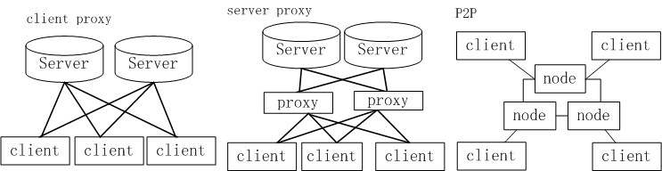

数据存储集群发展 单机 主从集群:mysql master/slave模式 多主从集群:代理+多主从集群 分布式存储:BigTable,HBase,Cassandra zookeeper cap,paxos
多主从集群代理选型考虑 服务器proxy/客户端proxy/P2P 是否可定制、二次开发 监控运维是否友好 自研成本 Redis: codis、twemproxy ... Mysql: cobar、TDDL、atlas ...
分布式KV数据库 redis,couchBase,mongodb,cassandra ... redis优点 纯内存，性能高，速度快 协议简单，客户端丰富 String,list,hash,set,zset等数据结构 持久化支持，RDB，AOF Replication支持 大量公司使用，市场选择 redis缺点 数据量太大，内存不够 无法区分冷热数据，内存严重浪费 RDB Block整个服务 写操作太频繁，AOF刷盘太多，容易Rewrite
分布式KV数据库 QDB 优点 redis子集，支持大部分常用redis命令 string,hash,list,set,zset数据结构支持 多存储引擎支持，rocksdb，leveldb等 超越内存限制，热点数据内存，冷数据硬盘 qdb,redis相互同步，支持psync断点续传 go多核友好，并发读支持，性能强悍 QDB 缺点 数据量太大，硬盘撑不住了 单点，性能瓶颈
Docker “这个容器管理引擎大大降低了容器技术的使用门槛，轻量级，可移植，虚拟化，语言无关，写了程序 扔上去做成镜像可以随处部 署和运行，开发、测试和生产环境彻底统一了，还能进行资源管控和虚拟 化。” http://www.oschina.net/news/57838/docker-dotcloud
环信 http://www.easemob.com/ 提供即时通讯云服务，开源 可用于移动应用，web应用 简单集成(30万用户以内免费) 技术爱好者论坛 http://www.imgeek.org end of ppt,thanks!